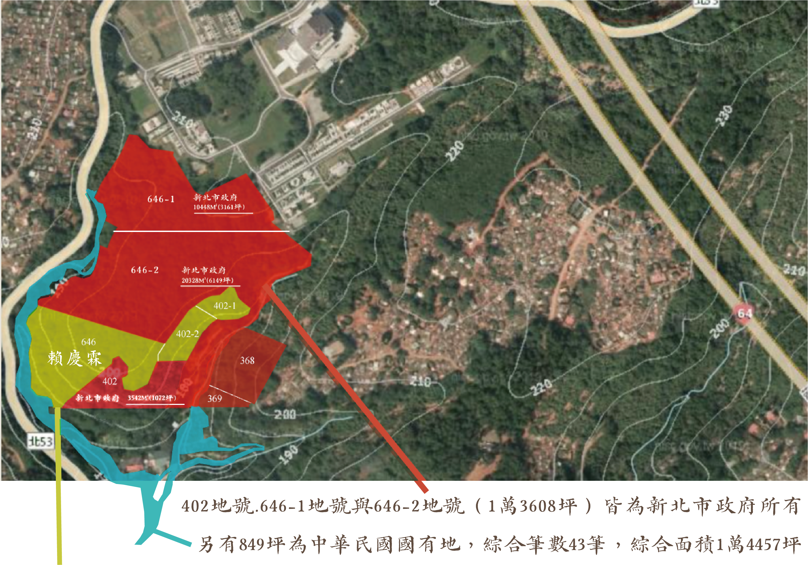
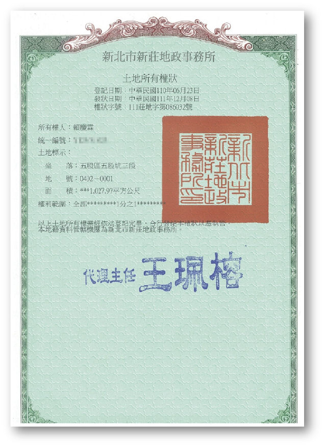
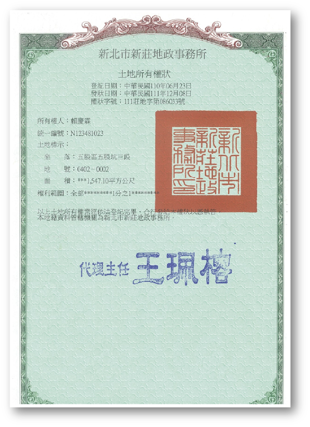
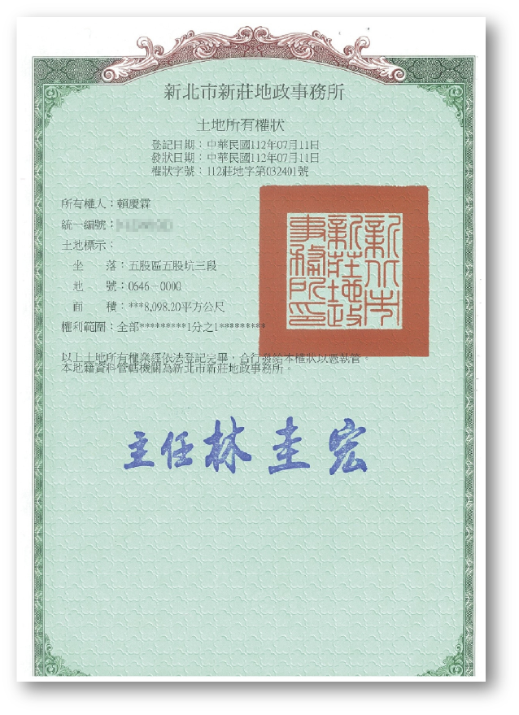

希望共同成就創造17685坪全國最大ESG低碳環保樹葬
公墓土地協議架構開闢為公共樹葬設施
五股觀音山森林公園生命生態一體化的環保樹葬示範基地

646地號與402-1地號與402-2地號(3228坪)皆為陳情人賴慶霖個人所有
聯合請願發起人賴慶霖
央求新北市政府將完全被您13,608坪公墓用地包圍的私人公墓用地進行徵收或協議價購，
聯合請願政府能否
積極面對2025年後台灣已經超越日本超高齡社會的「民死問題」
優先開闢全國首座ESG樹葬園區



我們懷抱著對天地自然的深切敬意，懇請
新北市政府將完全被您13,608坪公墓用地包圍產權清楚且乾淨的私人公墓用地進行徵收協議價購，
盼望能得到全國愛惜天地！愛護大自然生態！共護殊勝觀音山的閣下！
地方士紳及頭面人物與父老鄉親.兄弟姐妹.賢達大德.
共同向政府聯合請願護持一方淨土♻️️觀音山樹葬場域
本人也願意以低於市價的公墓用地價格提供給政府建設
讓國家開闢一個屬於我們台灣人民的國家級低碳環保樹葬基地。
請加入我們的聯合請願，讓我們對家屬的愛與對低碳環境ESG大自然責任同行。
您的參與能讓新北市青山永續～森林長存～更讓觀音山的生態之美得以世代相傳！